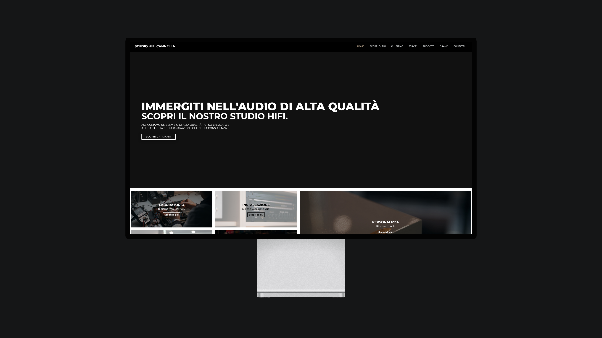
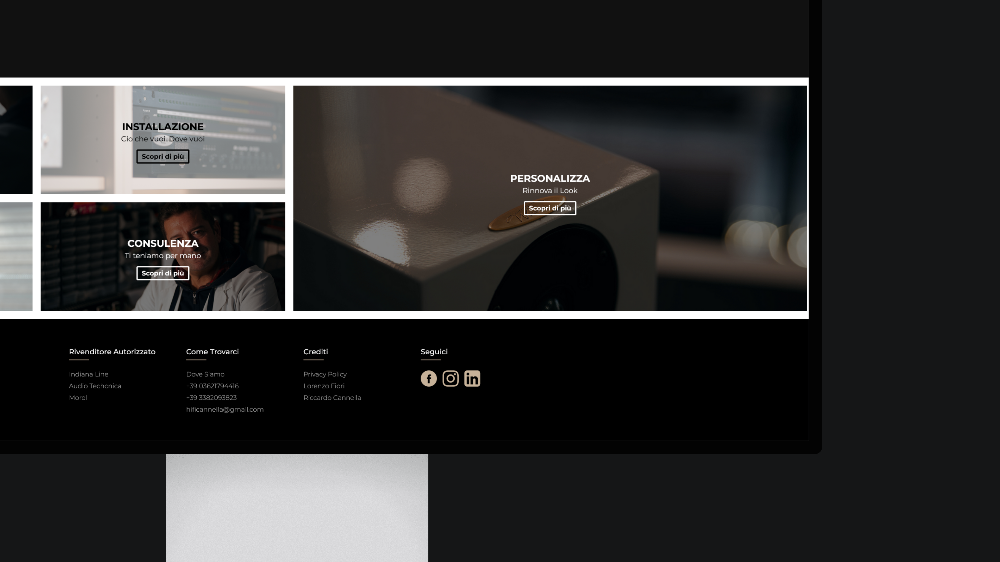

HiFi Cannella - Full Website Redesign
Client:
HiFi Cannella
Project:
Full Website Redesign
Overview
The website of HiFi Cannella, one of the few remaining studios of its kind, was in need of a redesign.
The brief was to create a layout that is easily understandable for all users, modern, and geared towards the new generations.


Process
Me and my collaborator, Riccardo Cannella, created an ultra-modern design that reflects the position of the studio as an industry visionary.
To showcase the warm, human side, we added eye-catching images shot inside the studio. Because it’s a mobile-first world now, we optimised the site for mobile and tablet.